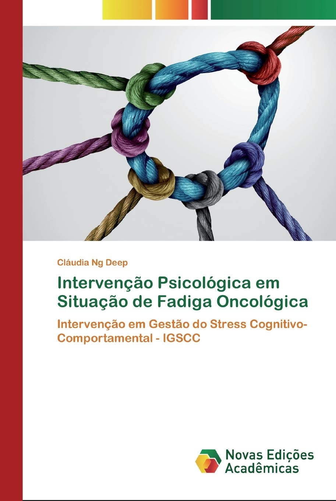

Books
Sal e Luz - Viver em Assertividade
Deep, C. (2010). Sal e Luz - Viver em Assertividade. Editora Paulus: Lisboa, Portugal. ISBN: 978-972-30-1519-5.
View at FNACLa sal y la luz: Vivir en asertividad
Deep, C. (2013). La sal y la luz: vivir en asertividad. Editora San Pablo: Coyoacan, Mexico.
View publisher pageIntervenção Psicológica em Situação de Fadiga Oncológica
Deep, C. (2020). Intervenção Psicológica em Situação de Fadiga Oncológica. Novas Edições Académicas: Portugal. EAN/UPC 9786200805980.
View on Amazon